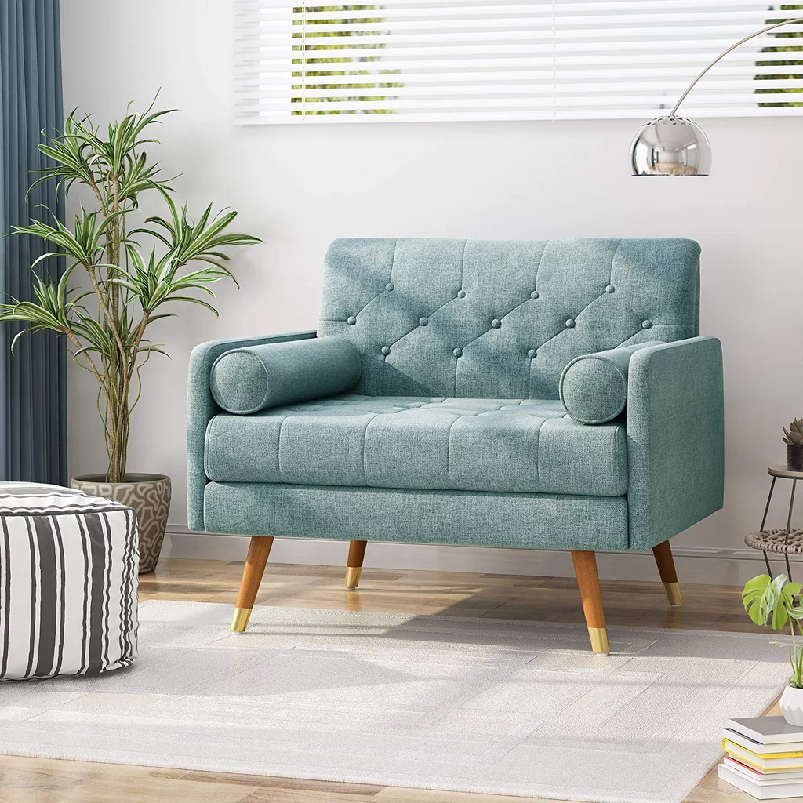

Home
When Bo Fentum and her family outgrew their home, they extended out rather than selling up. Here, the interior designer shares her tips on how to renovate, without the stress. (Well, almost.)
 Article written by: Ellie HamiltonPhotography by: Phill Taylor
House extension. If the words fill you with dread, you're not alone. But when Bo Fentum and her family outgrew their home, the interior designer decided to do exactly that. Transforming the space into a Palm Springs-inspired dream house. How did she do it? Planning and research. Lots of it. Here are her tips on extending out, with minimum stress, and maximum style.
- Plan, plan, plan. Then plan some more. You need to work out every little detail. And don't rush it. Why? Because it'll save you so much time in the long run. And help avoid the heartache of something going wrong in the middle of your build.
- Do your research. Swot up on building regs, materials and construction methods. That's how you'll make sure you stay on schedule, and minimise surprises along the way. Our biggest mishap? Glazing. I hadn't realised how long it takes for it to be made!
- Truth time: you will go over budget. Deep breath. How to minimise the damage? Spend wisely. Keep an eye on your purse strings at ALL times, and learn to compromise. You'll find ways to pull back that won't take away from your vision. Promise.